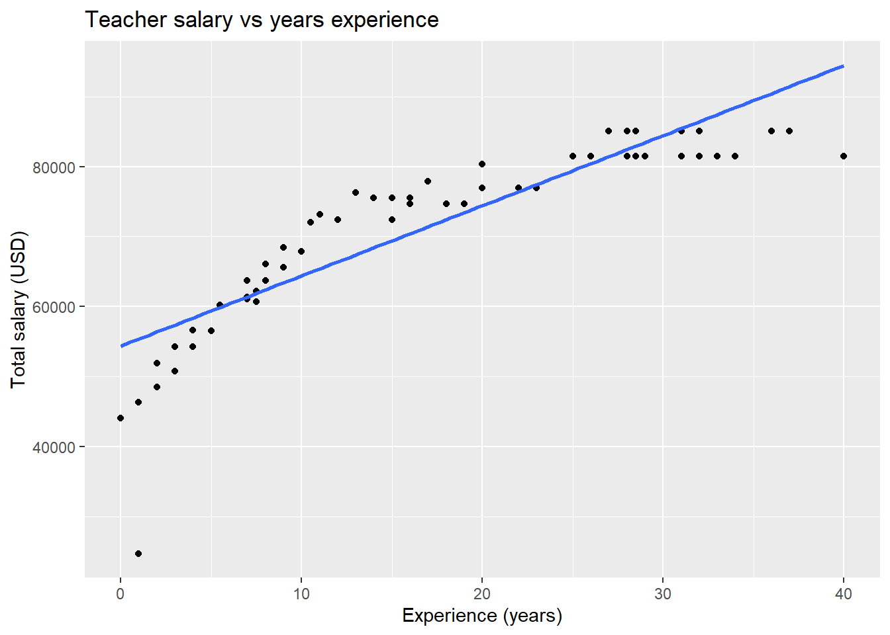

Chapter 4 Wrangling data
“Wrangling data” is a term used to describe the processes of manipulating or transforming raw data into a format that is easier to analyze and use. Data professionals often spend large chunks of time on the data wrangling phase of a project since the analysis and use flows much more smoothly when the wrangling is done appropriately. Like most chapters in this book, we won’t go too in depth into this subject, but we will cover enough to get you started. In particular, this section aims to
help you understand what the end goal of data wrangling might look like. In other words, start understanding what a good, easy to use data set might look like.
be able to use R’s
tidyversepackage to perform some basic data wrangling tasks.
This section of notes will can be thought of as a condensed version of the Wrangle and Program sections of R for Data Science and references this book substantially.
Remember, since we’re using the tidyverse package in this section, you have to load the package with
library(tidyverse)4.1 The goal: “tidy” data.
In the early days of STAT216, we stipulated that data sets should contain variables in columns and observations in rows. This is the common convention in data science, but this convention is not always followed, especially when you’re collecting data from out in the wild. This can come about for a myriad of reasons, but one common reason you’ll encounter “unconventional data organization” is that the data enter prioritizes human-readability over machine-readability and ease of analysis.
For example, suppose you were giving a blind taste test of three types of diet cola: diet Coke, diet Pepsi, and diet RC. You give 3 groups of 10 random people a drink and ask them to rate their preference on a scale of 1-5 with 5 being great and 1 being awful. A natural way to organize the data from your experiment may look something like the table below (the numbers are randomly generated).
set.seed(1123)
df <- tibble( coke = sample(1:5, 10, replace = T),
pepsi = sample(1:5, 10, replace = T),
rc = sample(1:5, 10, replace = T)) #generate table of random numbers.
df %>% knitr::kable()| coke | pepsi | rc |
|---|---|---|
| 3 | 3 | 1 |
| 4 | 2 | 1 |
| 4 | 3 | 2 |
| 1 | 4 | 3 |
| 3 | 4 | 5 |
| 4 | 1 | 2 |
| 1 | 5 | 3 |
| 2 | 3 | 3 |
| 3 | 5 | 2 |
| 3 | 4 | 5 |
Note, however, that the drink someone is tasting is actually a variable! This means our data set doesn’t have variables in columns, it splits one variable up into three different columns. This type of thing is quite common. Fortunately, R gives us a way to easily transform such data sets as we’ll see. The appropriate format for our convention of variables in columns, observations in rows would be
set.seed(1123) # make sure random numbers generated above are the same.
dfTidy <- tibble( #first a column of the drink participants had
drink = c( rep("coke", 10), rep("pepsi", 10), rep("rc", 10)),
# then a column of their scores
score = c(sample(1:5, 10, replace = T),
sample(1:5, 10, replace = T),
sample(1:5, 10, replace = T) ))
head(dfTidy)## # A tibble: 6 x 2
## drink score
## <chr> <int>
## 1 coke 3
## 2 coke 4
## 3 coke 4
## 4 coke 1
## 5 coke 3
## 6 coke 4This data set is less easy to read as a human (since it has 30 rows and two columns), but is much easier to analyze in R (and pretty much all other available software).
This example typifies our goal of tidy data:
Each variable should have its own column.
Each observation/observational unit should have its own row.
Again, the purpose of tidy data is to streamline and make the analysis stage of your data journey easier. Most functionality in R is substantially easier to implement when you start with a tidy data set.
As an example, if we’d like to make side-by-side box plots of the results of our cola taste test using the original data set df in ggplot2, we might try something like
ggplot(df, aes(x = ???, y = ???)) + geom_boxplot()but run into an immediate problem. What is the \(x\) variable? What is the \(y\)? If we use the tidy version of the same data, the answer is clear however: \(x\) is the drink, \(y\) is the score, since drink is the explanatory variable and taste preference is the response. Using dfTidy from above instead, we’d simply use the following.
ggplot(dfTidy, aes(x = drink, y = score)) +
geom_boxplot()
Essentially all tools in the tidyverse package are designed around having tidy data. In the next section, we’ll learn about one of the main functions from the tidyverse package used in tidying and analyzing data, the pipe.
4.2 The pipe
The pipe, typed as %>%, is a function from the tidyverse package whose intention is to make a sequence of transformations or operations on a data set more clear and easier for humans to follow and write. In some sense, you can think of it as adding layers of transformations to a data set, just like you use the + function to add layers to a graph in ggplot2. Note: this analogy is by design from the nice folks who created the tidyverse!
In essence, the pipe tells R to do the operation on the right side of the pipe to the data set on the left of it; if there are multiple pipes in a sequence, they are evaluated left to right/top to bottom. Let’s try an example to see how it works.
We’ll start with the dfTidy data from above. Suppose we forgot to add the results from a blind taste test of Diet Dr. Pepper. We load that data into R (simulating it of course in this case)
set.seed(1123)
dp <- tibble(drink = rep("dp", 10),
score = sample(1:5, 10, replace = TRUE))Now suppose want to
Add this data to
dfTidy.Add a new column that rescales the scores so that they’re between 0 and 1 instead of 1 and 5.
We can do this quickly using the following
newDf <- dfTidy %>% #start with dfTidy
bind_rows(dp) %>% #adds dp to the bottom of dfTidy
mutate(newScale = .25*score - .25) #add new column to whole dataset. To see that this did what we hope, let’s look at a random sample of 10 rows using the slice_sample function
set.seed(1123)
#more piping!
newDf %>%
slice_sample(n = 10)## # A tibble: 10 x 3
## drink score newScale
## <chr> <int> <dbl>
## 1 dp 2 0.25
## 2 coke 1 0
## 3 pepsi 1 0
## 4 dp 4 0.75
## 5 dp 3 0.5
## 6 dp 3 0.5
## 7 rc 3 0.5
## 8 rc 2 0.25
## 9 coke 2 0.25
## 10 dp 1 0It does as we’d hoped! Great. You may be wondering why piping exists. Earlier we said it was to make code easier to read and intuitive to write. But with respect to what? There are two older programming conventions that piping is trying to clarify: “overwriting the original” and “function composition”. Let’s create dfTidy using these two strategies.
Overwriting the original: At each stage, overwrite what you did at the previous stage. It’s not too bad in this example, but can be tedious if you have say 10 different transformations to make. It is especially inconvenient if you need to make changes since you have to track those changes through all your steps.
newDf1 <- bind_rows(dfTidy, dp)
newDf1 <- mutate(newDf1, newScale = .25*score - .25)
#check to see we got the same thing
all.equal(newDf, newDf1)## [1] TRUEFunction composition: This is probably the least human readable way to write create our new data set, but it also makes explicit what the computer is doing and it looks shorter. Notice that you have to read from the inside out and right to left. Once again, this isn’t too bad with only two transformations, but you could imagine how much of a nightmare this could be with 10 transformations, especially in terms of reading the code.
newDf2 <- mutate( bind_rows(dfTidy, dp), newScale = .25*score - .25)
#are they equal?
all.equal(newDf, newDf2)## [1] TRUEHopefully you think the piped sequence of transformations is more straightforward to read and write than the other two options.
Now that we’re more comfortable with the pipe, let’s use it to implement some common forms of transformations!
4.3 Common tidying operations
If you’re dealing with a data set that isn’t tidy, it typically violates our tidy criteria in one of two ways:
Variables can be split across several columns. In this case, the column names are not variable names, but values of a variable like the original data set for our diet cola blind taste test
dfabove.Observations can be split across several rows.
There are two functions in the tidyverse used to handle these cases: pivot_longer(...) and pivot_wider(...). Caution: it can take a little bit of time get these functions to do exactly what you want. Have a bit of patience and you’ll improve with time!
The function pivot_longer(...) is used to tidy a data set when variables are split across several columns; it takes the values of the variable that are the untidy column names, makes a new column for them, then organizes the values of the columns appropriately. This is best observed in an example: instead of reentering the data in our cola example, we could instead use pivot longer.
dfTidy1 <- df %>%
#specify the columns are actually values
pivot_longer(cols = c("coke", "pepsi", "rc"),
#then specify column/variable name
names_to = "drink",
#finally specify the name of the values
values_to = "score"
)
glimpse(dfTidy1)## Rows: 30
## Columns: 2
## $ drink <chr> "coke", "pepsi", "rc", "coke", "pepsi", "rc", "coke", "pep~
## $ score <int> 3, 3, 1, 4, 2, 1, 4, 3, 2, 1, 4, 3, 3, 4, 5, 4, 1, 2, 1, 5~At first it doesn’t seem like this data set is the same as dfTidy, but notice that R arranged the values as “coke”, “pepsi”, “rc”. If we rearrange the rows alphabetically by drink, we’ll see that they are in fact that same data sets.
all.equal( dfTidy %>%
arrange(drink),
dfTidy1%>%
arrange(drink))## [1] TRUEThe function pivot_wider(...) is used to tidy a data set when observations are split across several rows. The tidyverse has a data set simply called table2 that provides an example of observations being split across several rows. This table shows “the number of TB cases documented by the World Health Organization in Afghanistan, Brazil, and China between 1999 and 2000” (from the documentation).
table2## # A tibble: 12 x 4
## country year type count
## <chr> <int> <chr> <int>
## 1 Afghanistan 1999 cases 745
## 2 Afghanistan 1999 population 19987071
## 3 Afghanistan 2000 cases 2666
## 4 Afghanistan 2000 population 20595360
## 5 Brazil 1999 cases 37737
## 6 Brazil 1999 population 172006362
## 7 Brazil 2000 cases 80488
## 8 Brazil 2000 population 174504898
## 9 China 1999 cases 212258
## 10 China 1999 population 1272915272
## 11 China 2000 cases 213766
## 12 China 2000 population 1280428583In this example, the observations are a country in a year, so cases and population are not values. Instead, they are variables, since in a given year each country has a population and a certain number of TB cases.
table2 %>%
#first specify where the new column names are coming from
pivot_wider(names_from = "type",
#next specify where the new column values are coming from
values_from = "count")## # A tibble: 6 x 4
## country year cases population
## <chr> <int> <int> <int>
## 1 Afghanistan 1999 745 19987071
## 2 Afghanistan 2000 2666 20595360
## 3 Brazil 1999 37737 172006362
## 4 Brazil 2000 80488 174504898
## 5 China 1999 212258 1272915272
## 6 China 2000 213766 1280428583Much better! Notice that the same information is displayed in both tables. The latter option is simply easier to work with.
4.4 Mutate, group by, and summarize
Once you’re working with a tidy data set, you may want to add columns to it, create a summary of the data, or both. The key functions for performing these operations are mutate(...), group_by(...), summarize(...), and transmute(...), all of which are from the dplyr package, which is part of the tidyverse. Before looking at specific examples of these functions in action, we’ll define what they do.
mutate(...)adds columns to an existing data set and keeps the old columns.transmute(...)creates new columns from a data set, but drops the old existing columns.group_by(...)takes column names as input and converts your data set to a “grouped” table. This means all operations and summary/aggregate functions are performed by group. The groups are defined by the values in the columns you specified.summarize(...)creates a new data set giving a customized summary of your data set. All operations are done by the grouping variables.
For examples of each function, we will use the gss2010 data set, which is part of the openintro package. As a reminder, to follow along you need to attach this package with
library(openintro)
data(gss2010)The gss2010 data set has 2044 measurements of 5 varibles:
hrsrelax: hours relaxed after work on an average work day.mntlhlth: number of days in the last month where mental health was not good.hrs1: weekly hours worked.degree: highest educational attainment or degree.grass: Should marijuana be legalized?
Working with this data set provides an obstacle that we haven’t encountered much so far in these notes: NA values. A quick glimpse at the data reveals that there are quite a few missing values. In learning how to use the functions listed above, we’ll also see a few strategies for dealing with missing values.
glimpse(gss2010)## Rows: 2,044
## Columns: 5
## $ hrsrelax <int> 2, 4, NA, NA, NA, NA, 3, NA, 0, 5, 5, NA, 3, NA, NA, NA~
## $ mntlhlth <int> 3, 6, NA, NA, NA, NA, 0, NA, 0, 10, 0, NA, 0, NA, NA, N~
## $ hrs1 <int> 55, 45, NA, NA, NA, NA, 45, NA, 40, 48, 26, NA, 40, NA,~
## $ degree <fct> BACHELOR, BACHELOR, LT HIGH SCHOOL, LT HIGH SCHOOL, LT ~
## $ grass <fct> NA, LEGAL, NA, NOT LEGAL, NOT LEGAL, LEGAL, NA, NA, NOT~First, let’s add a new column to our data set that gives the total number of hours each person in this survey spend at work or relaxing and another column that reports the proportion of their time spent working or relaxing Monday through Friday. Note that since hrsrelax gives the number of hours they relax in a day, we should add 5 times that amount for total time spent relaxing during the work work.
new_gss <- gss2010 %>%
mutate(totalHours = 5*hrsrelax + hrs1, #hours spent working and relaxing
propTimeWorking = totalHours/(5*24)) #proportion of time spent working/relaxing
# random sample of 7 rows from the data set
glimpse( slice_sample(new_gss, n = 7) ) ## Rows: 7
## Columns: 7
## $ hrsrelax <int> 4, 6, 6, NA, NA, 7, NA
## $ mntlhlth <int> 0, 0, 2, NA, NA, 0, NA
## $ hrs1 <int> 55, 35, 9, NA, NA, 20, NA
## $ degree <fct> LT HIGH SCHOOL, HIGH SCHOOL, LT HIGH SCHOOL, HIG~
## $ grass <fct> NOT LEGAL, NA, LEGAL, NA, NA, NA, LEGAL
## $ totalHours <dbl> 75, 65, 39, NA, NA, 55, NA
## $ propTimeWorking <dbl> 0.6250000, 0.5416667, 0.3250000, NA, NA, 0.45833~Note that whenever one of our variables was unavailable, both of our new columns gave an NA value as well.
Suppose now that we wanted the same information, but we wanted to exclude all rows with NA values, and we only wanted to see our new columns and the respondent’s degree. This is a perfect situation for transmute(...).
new_gss <- gss2010 %>%
transmute(degree = degree, #keeps the degree column
totalHours = 5*hrsrelax + hrs1, #hours spent working and relaxing
propTimeWorking = totalHours/(5*24)) %>%
drop_na() #drops all rows with an NA
slice_sample(new_gss, n = 7)## # A tibble: 7 x 3
## degree totalHours propTimeWorking
## <fct> <dbl> <dbl>
## 1 GRADUATE 70 0.583
## 2 LT HIGH SCHOOL 54 0.45
## 3 HIGH SCHOOL 52 0.433
## 4 BACHELOR 55 0.458
## 5 BACHELOR 65 0.542
## 6 BACHELOR 70 0.583
## 7 GRADUATE 50 0.417Next up, let’s start making some summary tables. First, let’s see if there’s a correlation between educational attainment and hours worked, hours relaxing, or days with mental health struggles. To do this, we want to group our dataset by the degree variable so that all of our summary functions are applied to the groups of respondents with the same degrees.
gss2010 %>%
group_by(degree) %>%
summarize( meanHrsWrk = mean(hrs1, na.rm = TRUE), # avg hours worked, removing NA
sdHrsWrk = sd(hrs1, na.rm = TRUE), # sd of hours worked, removing NA
meanHrsRlx = mean(hrsrelax, na.rm = TRUE),
meanMntlHlth = mean(mntlhlth, na.rm = TRUE)
) %>%
arrange(desc(meanHrsWrk)) # arrange results in descending order## # A tibble: 5 x 5
## degree meanHrsWrk sdHrsWrk meanHrsRlx meanMntlHlth
## <fct> <dbl> <dbl> <dbl> <dbl>
## 1 BACHELOR 42.5 13.6 3.48 2.67
## 2 JUNIOR COLLEGE 41.4 18.1 3.53 3.56
## 3 GRADUATE 40.8 15.5 3.67 2.40
## 4 HIGH SCHOOL 39.6 15.0 3.79 4.58
## 5 LT HIGH SCHOOL 38.7 15.8 3.73 4.87So everyone works fairly similarly and relax a similar number of hours every night, but we observe that the number of days per month with mental health struggles seems to decrease with an increase in educational attainment.
We could also see if there’s any sort of relationship between degree and stance on marijuana legalization. First, let’s throw out all the rows with an NA for the grass variable and see how many people have type of degree.
gss2010 %>%
filter( !is.na(grass) ) %>% #selects all rows where grass is *not* NA
group_by(degree) %>%
summarize( degCount = n(), # special function to count the number in each group
legalCount = sum(grass == "LEGAL" ),
legalProp = legalCount / degCount
) %>%
arrange(desc(legalProp))## # A tibble: 5 x 4
## degree degCount legalCount legalProp
## <fct> <int> <int> <dbl>
## 1 GRADUATE 136 73 0.537
## 2 BACHELOR 231 119 0.515
## 3 HIGH SCHOOL 611 304 0.498
## 4 JUNIOR COLLEGE 86 42 0.488
## 5 LT HIGH SCHOOL 195 65 0.333So, roughly speaking, the percentage of people who believe marijuana should be legalized increases with educational attainment. This is likely not too surprising, but interesting to see shake out in the summary table none the less!
As usual, one can (and should!), do quite a bit more with these functions, but these examples should give you a reasonable idea about how they work and what they can do for you.